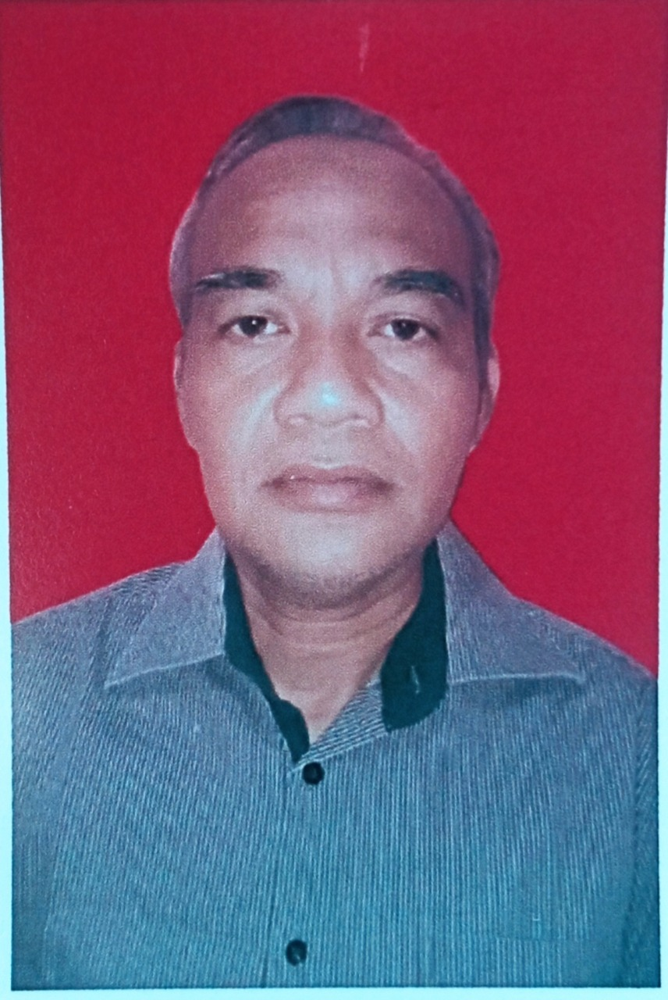
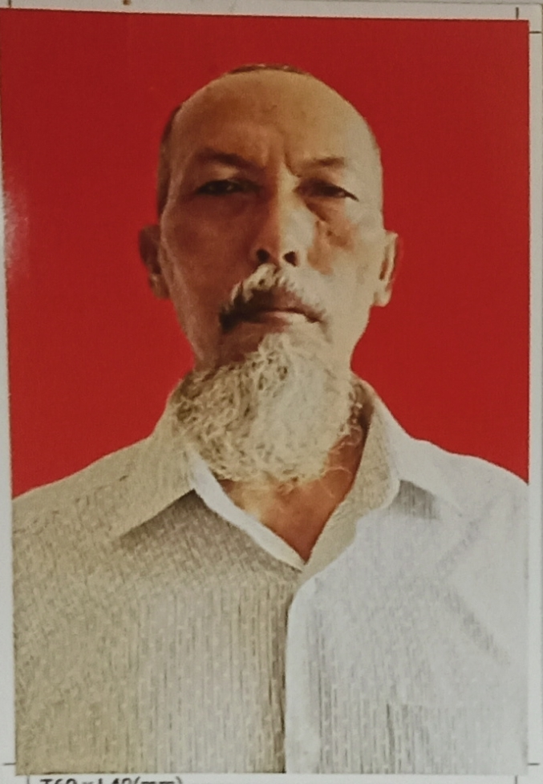

Daftar Calon Rt 02 Rw 07
Calon nomor urut 1
Suroto
Visi:
Maju untuk perubahan, perubahan untu kemajuan
Misi:
Transparansi dan tertib administrasi
Menyampaikan laporan keuangan secara rutin
Mempermudah warga dalam pernberkasan BLT/Bansos (warga tidak perlu rnenyerahkan berkas setiap pencairan)
Meningkatkan sistem keamanan Lingkungan
Menyediakan seragam dan peralatan satpam
Memasang CCTV di lingkungan
Meningkatkan pembangunan dengan kejujuran dan keterbukaan
Pengaspalan seluruh jalan margi utami
Membangun atap lapangan serbaguna
Mengadakan pertemuan warga secara rutin
Menampung aspirasi dan masukan/kritikan dari warga
Mengoptimalkan fungsi aula sebagai sarana untuk kepentingan warga
Melayani warga dengan sepenuh hati, amanah dan mandiri
Menjaga kerukunan warga
Melayani warga tanpa pilih kasih/diskriminasi
Mengutamakan kepentingan umum diatas kepentingan pribadi
Tidak menggunakan fasilitas umum untuk untuk kepentingan pribadi
Membangun Team Work (kerja tim)
Calon nomor urut 2
Drs. Mohamad Idris
Visi:
Satu tekad kebersamaan untuk warga dan lingkungan yang lebih baik
Misi:
Evaluasi kinerja yang sudah terlaksana dengan perbaikan ke arah yang lebih baik
Melanjutkan menjaga suasana yang sudah kondusif dan harmonis dengan komunikasi antar warga yang lebih inten
Mempermudah pelayanan kepada warga dengan menyediakan waktu lebih yang mudah ditemui secara langsung setiap saat
Menyederhanakan setiap pengurusan berkas BLT/Bansos yang menjadi rutinitas dan kegiatan warga yang selama ini selalu lancar dan nyaman
Menyiapkan sumber daya pengurusan RT dengan menggali dengan pemanfaatan yang optimal dan lebih tanggap dengan lingkungan perumahan
Prasarana dan sarana yang sudah disediakan selama ini lebih dimaksimalkan penggunaanya dengan menyediakan waktu leluasa kepada warga terutama dengan edukasi mandiri kepada generasi "SIAP"
Menampung dan merealisasikan masukan warga yang positif, inovatif dan kreatif aktif
Selalu mengupayakan sistem pencegahan banjir dengan pemeliharaan saluran air berkala
Gotong royong warga sebagai bentuk peduli warga Perum. margi terhadap lingkungan sekaligus menjadi sarana komunikasi positif antar warga
Sistem keamanan terpadu dengan Babinsa & Bimaspal sebagai bentuk pelayanan keamanan dan kenyamanan warga, Serta berkoordinasi dengan linmas dilingkungan RW 07
Bekerja dengan ikhlas dan selalu berkesinambungan dengan warga dengan menjadikan mudah, cepat dan tepat sasaran
Siap bekerja di periode 2022 s/d 2027